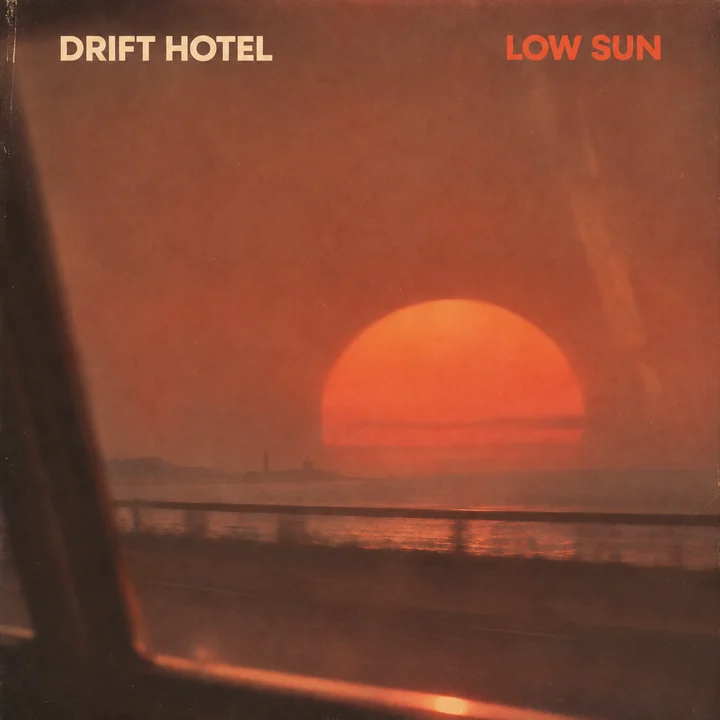

A companion app for Apple Music, on Mac and iPhone.
Music on your Mac. Now Playing on your iPhone.
Music playing on your Mac appears on your iPhone’s Lock Screen and in StandBy. And with Continue Listening, switch between devices without losing your place or your queue.
A free beta, for Mac and iPhone.
Mac, playing in Music
iPhone, on the Lock Screen and in StandBy
